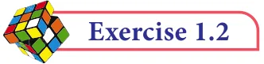

1.4.11 Power Set

For example,
- (i)If A={2, 3}, then find the power set of A.
The subsets of A are \(\emptyset\) , {2},{3},{2,3}. The power set of A,
P(A) = { \(\emptyset ,{2},{3},{2,3}}\)
- (ii)If \(A =\) { \(\emptyset\) , { \(\emptyset\) }}, then the power set of A is { \(\emptyset\) , { \(\emptyset\) , { \(\emptyset\) }}, { \(\emptyset\) } , {{ \(\emptyset\) }} }.
An important property.
We already noted that n(A) # n[P(A)]. But how big is P(A) ? Think about this a bit, and
see whether you come to the following conclusion:
- (i)If n(A) \(= m\), then n[P(A)] \(= 2\)
- (ii)The number of proper subsets of a set A is n[P(A)] \(- 1 = 2 - 1\).

Find the number of subsets and the number of proper subsets of a set X={a, b, c, x, y, z}. Solution Given X={a, b, c, x, y, z}.Then, n(X) =6

The number of subsets = n[P(X)] \(= 2 = 64\)
The number of proper subsets \(= n[P(X)]-1 = 2 - 1\)
\(= 64 - 1 = 63\)

- 1.Find the cardinal number of the following sets.
- (i)\(M =\) {p, q, r, s, t, u}
- (ii)\(P =\) {x : \(x = 3n+2\), \(n \in W\) and x< 15}
- (iii)\(Q =\) {y : \(y = \frac{4}{3n}\) , \(n \in N\) and \(2 < n \le 5}\)
- (iv)\(R =\) {x : x is an integers, \(x \in Z\) and \(- 5 \le x <5}\)
- (v)\(S =\) The set of all leap years between 1882 and 1906.
- 2.Identify the following sets as finite or infinite.
- (i)\(X =\) The set of all districts in Tamilnadu.
- (ii)\(Y =\) The set of all straight lines passing through a point.
- (iii)\(A =\) { x : \(x \in Z\) and x <5}
- (iv)\(B =\) { x : \(x^{2} - 5x+6 = 0\), \(x \in\) N}
- 3.Which of the following sets are equivalent or unequal or equal sets?
- (i)\(A =\) The set of vowels in the English alphabets.
\(B =\) The set of all letters in the word “VOWEL”
- (ii)\(C = {2,3,4,5} D =\) { x : \(x \in W\) , 1< x<5}
- (iii)\(X =\) { x : x is a letter in the word “LIFE”} \(Y =\) { F, I, L, E}
- (iv)\(G =\) { x : x is a prime number and \(3 < x < 23} H =\) { x : x is a divisor of 18}
- 4.Identify the following sets as null set or singleton set.
- (i)\(A =\) {x : \(x \in N\), \(1 < x < 2}\)
- (ii)\(B =\) The set of all even natural numbers which are not divisible by 2
- (iii)\(C = {0}\).
- (iv)\(D =\) The set of all triangles having four sides.
- 5.State which pairs of sets are disjoint or overlapping?
- (i)\(A =\) {f, i, a, s} and B={a, n, f, h, s}
- (ii)\(C =\) {x : x is a prime number, x >2} and \(D ={x:x\) is an even prime number}
- (iii)\(E =\) {x : x is a factor of 24} and F={x : x is a multiple of 3, \(x < 30}\)
- 6.If \(S =\) {square, rectangle, circle, rhombus, triangle}, list the elements of the following
subset of S.
- (i)The set of shapes which have 4 equal sides.
- (ii)The set of shapes which have radius.
- (iii)The set of shapes in which the sum of all interior angles is 180 .
- (iv)The set of shapes which have 5 sides.
- 7.If \(A =\) {a, {a, b}}, write all the subsets of A.
- 8.Write down the power set of the following sets:
- (i)\(A =\) {a, b} (ii) \(B = {1\), 2, 3} (iii) \(D =\) {p, q, r, s} (iv) \(E = \emptyset\)
- 9.Find the number of subsets and the number of proper subsets of the following sets.
- (i)\(W =\) {red, blue, yellow} (ii) \(X =\) { \(x^{2}\) : \(x \in N\), \(x^{2} \le 100}\).
- 10.(i) If n(A) \(= 4\), find n[P(A)]. (ii) If n(A)=0, find n[P(A)].
- (iii)If n[P(A)] \(= 256\), find n(A).